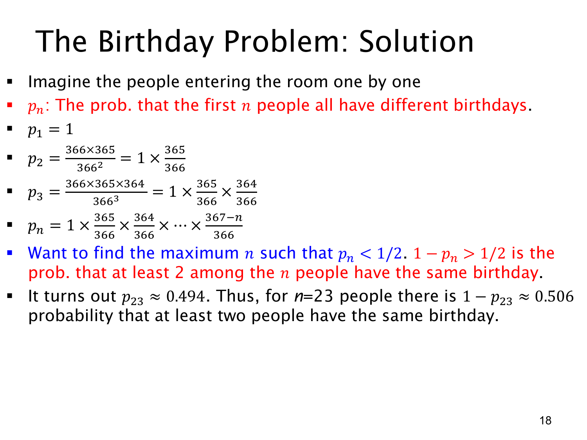

L1.9 · 第 18 页讲解原文
查看这一页课件

生日问题的乘积公式与 23 人阈值
令 pn 表示前 n 个人的生日全部不同的概率。注意，它不是“有人同生日”的概率；后者是 1−pn。
想象大家依次进入房间。在 366 天均匀、不同人生日独立的模型中：
- 第一人无须避开任何生日，所以 p1=1。
- 第二人避开第一人的日期，有 365 个可选日期，所以 p2=365/366。
- 若前两人生日不同，第三人必须避开两个日期，有 364 个可选日期，所以 p3=(365/366)(364/366)。
依此类推，对 1≤n≤366，
pn=k=0∏n−1366366−k=1⋅366365⋅366364⋯366367−n.
这里最后一个分子为 366−(n−1)=367−n。每一步都是“前面所有生日已经不同”的条件下，新人避开已有日期的概率；并不是把各对人的不同生日事件当成独立事件。
目标是找使 1−pn>1/2 的最小人数，等价于使 pn<1/2 的最小整数。课件这一行写了 “maximum”，与题意不符，应读作 “minimum”。随着人数增加，pn 单调减小，重复生日概率单调增加。
计算得到
p22≈0.525249,p23≈0.493677.
所以 22 人的重复概率约为 0.474751，尚未过半；23 人的重复概率约为
1−p23≈0.506323>21.
最少 23 人即可过半，但并不保证一定有人同生日；保证重复仍需要 367 人。这里沿用课件的 366 天模型，其数值与 365 天模型略有不同。
查看本页勘误
原课件措辞勘误
原 PDF 第 18 页写 “maximum n such that p_n < 1/2”。第 17 页要求重复生日概率大于 1/2 的最小人数，因此应为 minimum。讲解已明确该差异，原 PDF 和讲解原文均保留。
独立乘积计算：366 天模型下 p_22 = 0.5252493537037138，p_23 = 0.4936769881805398，阈值为 23 人。